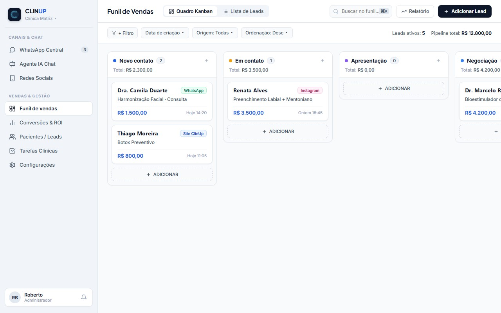

Você investe na clínica, o perfil cresce, mas a agenda continua dependendo de convênio.
Sabe para onde vão os pacientes particulares que chamam a sua clínica? Eles estão esfriando no vácuo do seu WhatsApp agora mesmo.
A CLINUP fecha o ralo por onde essa receita escorre — sem dancinhas e sem enrolação.
✓ Diagnóstico gratuito de 5 minutos · 10 perguntas simples sobre sua recepção · resultado na hora
O Cemitério de Leads no seu WhatsApp
Imagine a cena: um paciente querendo um procedimento de R$ 500 encontra sua clínica às 20h30.
Ele clica no WhatsApp pronto pra agendar.
Sua recepção já foi embora. Ele não vai esperar até amanhã às 8h — chama o concorrente que respondeu na hora.
O diagnóstico mostra onde essas consultas estão sumindo no chat.
- Os horários em que o WhatsApp da clínica fica no vácuo — almoço, noite e fim de semana
- Quanto cada conversa que esfriou custa, no seu ticket médio
- O que automatizar primeiro pra responder em segundos, sem robotizar o atendimento
O Ralo Financeiro da Cadeira Vazia
Uma falta às 15h de terça não é um imprevisto: é uma hora de consultório paga que ficou vazia — e horário vago não se revende.
Quando sua equipe precisa ligar uma por uma pra confirmar, pessoas esquecem.
A confirmação inteligente cobra no tempo certo e reocupa a vaga na hora se alguém desmarcar.
- Sua taxa de falta comparada à de clínicas com confirmação automática
- Quanto os horários vazios custam por ano, no seu ticket médio
- Confirmação e lista de espera pra reocupar os horários que abrirem
Quanto dinheiro está em cima da mesa?
Dois números da sua rotina e uma estimativa na hora — o valor real sai do diagnóstico.
O que muda quando a ClinUp entra em campo? O lucro volta a ser a sua prioridade.
É a receita das consultas particulares voltando pra agenda — sem depender de repasse de convênio.
Projeção ilustrativa de uma clínica com ticket médio de R$ 420, construída sobre os pilares acima.
Os números da sua clínica saem do seu diagnóstico.
O diagnóstico mostra o ponto de partida da sua clínica
Não é um software pra você aprender a mexer. Não é consultoria teórica.
A gente instala e mantém a estrutura pronta: o site que traz o paciente e o painel onde ele é atendido, acompanhado e medido.
Você abre e vê o que aconteceu na clínica hoje — e ninguém da sua equipe precisa aprender nada técnico.

O site da clínica
Escrito pra sua especialidade, com o botão de marcar consulta na primeira tela do celular — onde o paciente já está olhando.
Atendimento com IA no WhatsApp
Responde na hora, em linguagem natural, e conduz a conversa até o agendamento. Ninguém mais espera três horas por uma resposta.
Gestão das redes sociais
Os posts da clínica saem do painel: programados, publicados e acompanhados no mesmo lugar, sem depender de você lembrar.
Os números em tempo real
Quantos chamaram, de onde vieram e quantos viraram consulta. Você não espera fechar o mês pra saber o que está funcionando.
Recuperação de quem sumiu
Quem perguntou o preço e não respondeu mais entra num acompanhamento automático, em vez de virar só mais um contato esquecido.
As três objeções que mais escutamos
Do diagnóstico ao plano de ação, em 3 passos
Responder
10 perguntas diretas sobre como sua clínica atende hoje. Cinco minutos, sem reunião e sem cadastro de cartão.
Analisar
Suas respostas viram uma leitura dos 4 pilares de conversão: o que está sólido e por onde o lucro está vazando.
Priorizar
Você sai com a ordem certa do que arrumar primeiro — e uma sessão gratuita pra montar o plano de ação, se quiser.
Cada semana sem saber onde vaza é lucro que não volta.
O diagnóstico é gratuito, leva 5 minutos e mostra por onde começar.
O resto é conversa de plano de ação — sem compromisso.
Gerar meu Diagnóstico de Lucro →Gratuito · 5 minutos · resultado na hora